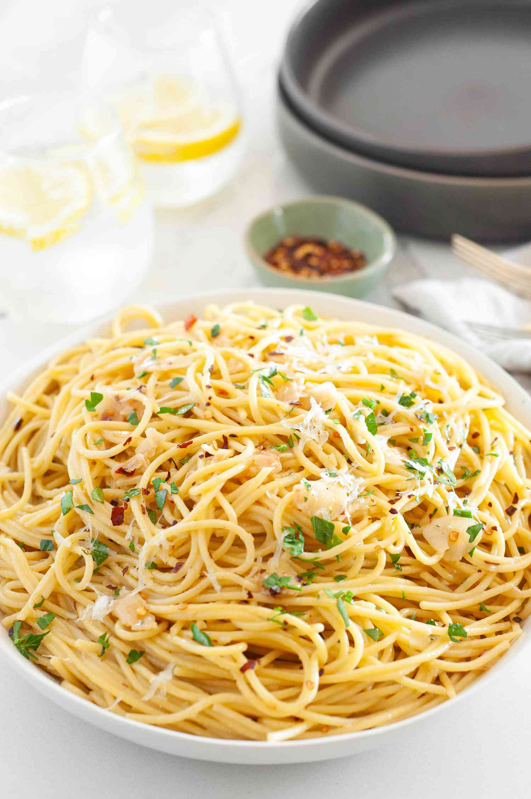

Spaghetti Aglio e Olio

Description
Spaghetti aglio e olio is a simple and delicious Italian dish made with spaghetti, garlic, olive oil, red pepper flakes, and parsley. Here's a recipe that serves 4-6 people:
Ingredients:
- 1 pound spaghetti
- 1/2 cup extra-virgin olive oil
- 6 garlic cloves, thinly sliced
- 1 teaspoon red pepper flakes
- 1/2 cup chopped fresh parsley
- Salt and pepper, to taste
- Optional: grated Parmesan cheese, for serving
Steps:
- Bring a large pot of salted water to a boil. Add the spaghetti and cook until al dente, about 8-10 minutes.
- While the spaghetti cooks, heat the olive oil in a large skillet over medium heat. Add the garlic and red pepper flakes and cook until the garlic is golden brown, about 2-3 minutes.
- Drain the spaghetti and add it to the skillet with the garlic and red pepper flakes. Toss well to coat the spaghetti with the olive oil and garlic mixture.
- Stir in the chopped parsley and season with salt and pepper to taste.
- Taste the chilli and adjust the seasoning as needed.
- Serve hot, with grated Parmesan cheese, if desired.